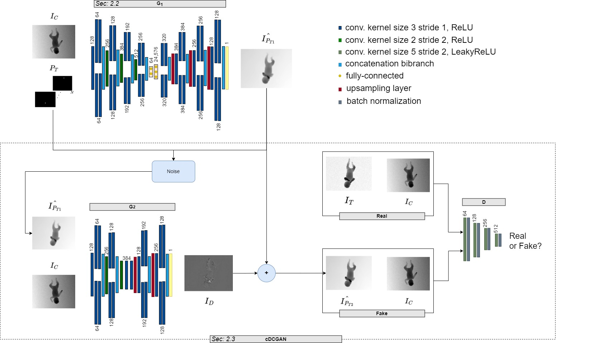
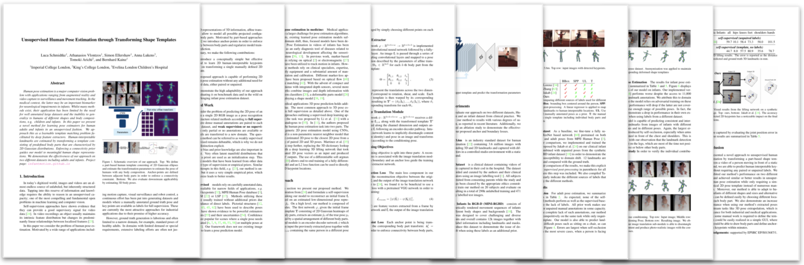

Giuseppe Pio Cannataa, Lucia Migliorellia, Emanuele Frontonib, Sara Mocciac
a Università Politecnica delle Marche, b Università degli Studi di Macerata, c Scuola Superiore Sant’Anna


github
Abstract
@inproceedings{ }